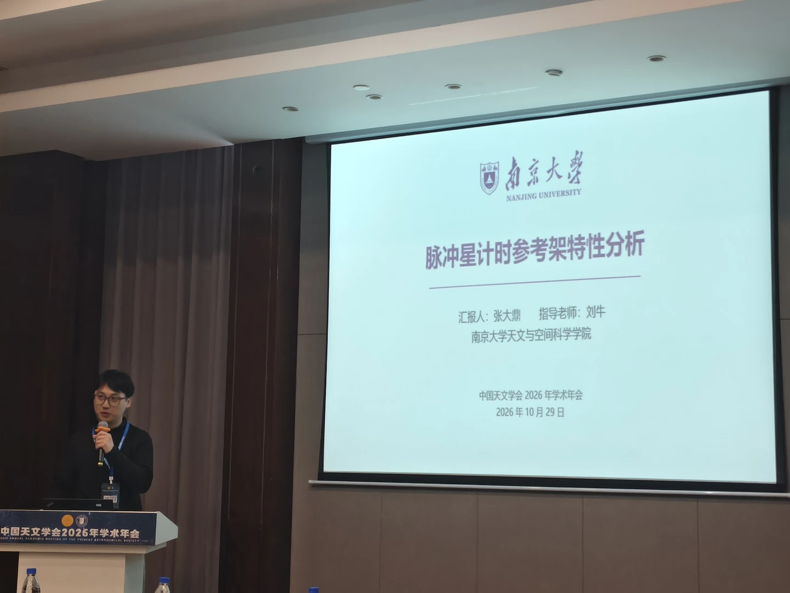

Talks
2026
Characterizing Pulsar Timing Reference Frames
Contributed talk, Astrometry and Celestial Mechanics session, Annual Meeting of the Chinese Astronomical Society, Shijiazhuang, China, .


2025
Using the Gaia Catalog for Stellar Aberration-Based Autonomous Navigation
Contributed talk, Astrometry and Celestial Mechanics session, Annual Meeting of the Chinese Astronomical Society, Xiamen, China, .